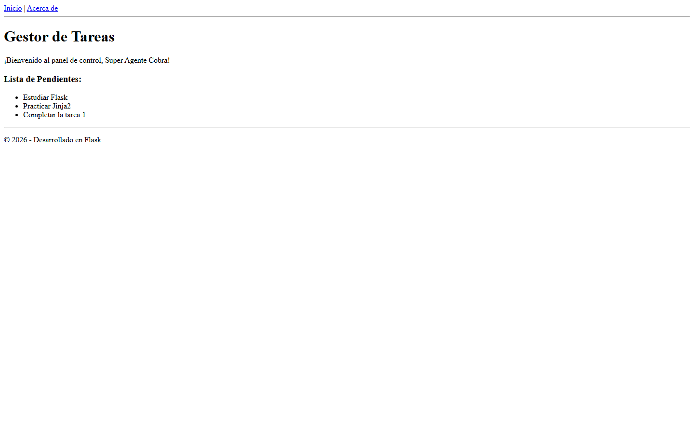
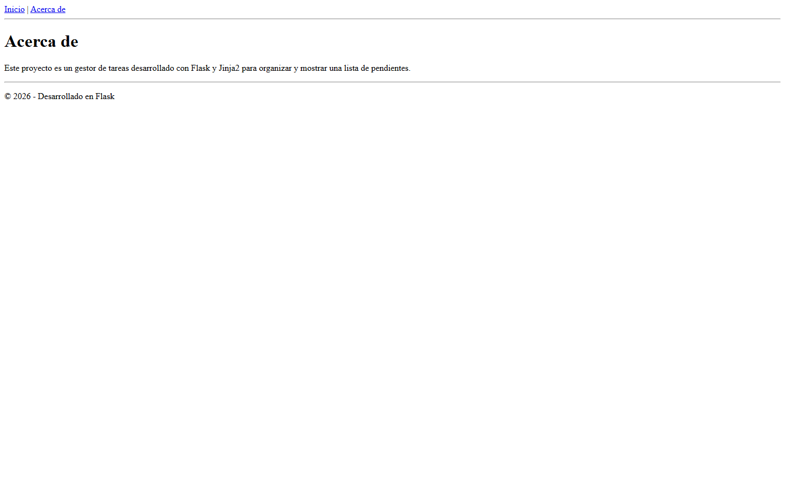

Tecnología Web · Módulo 2
Gestor de tareas con rutas, variables dinámicas y herencia de plantillas.
Backend en Python · Renderizado del lado del servidorArquitectura
app.py
Define las rutas, prepara la lista de tareas y renderiza las plantillas.
base.html
Centraliza navegación, título, contenido principal y pie de página.
index.html
Muestra dinámicamente las tareas recibidas desde Flask.
acerca.html
Describe el proyecto mediante la ruta /acerca.
Corrección principal
Python y Jinja2 son sensibles a mayúsculas y minúsculas.
Resultado → la lista de pendientes se renderiza correctamente.
Jinja2
Una estructura común, múltiples páginas con contenido propio.
Navegación
bloque título
bloque contenido
pie de página
Hereda la base
muestra el gestor
recorre tareas
Hereda la base
define “Acerca de”
describe el proyecto
Resultado final


Aprendizaje: conexión entre Flask y Jinja2, uso de variables y reutilización mediante herencia.